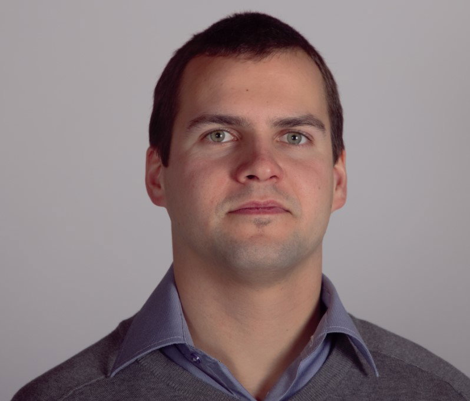

About

Who I am
With over 15 years of experience in mechanical engineering, I have operated across every stratum of a product’s lifecycle. From machining parts on the shop floor to programming CNC equipment; from R&D and product testing to certification and process engineering—every role, including my time as Operations Manager for a multinational construction company, forged how I understand the architecture of information.
This journey led to a simple yet profound conclusion: organizations—just like systems—work best when information flows like a synchronized assembly line, rather than lingering in isolated silos. When every step builds seamlessly into the next, waste vanishes, decisions sharpen, and engineering transforms into an engine of pure momentum.
My Philosophy
I believe engineering is the bridge between human imagination and physical reality. Every 3D model, every line of code, and every manufacturing tolerance is like a flawless cog in a precision Swiss watch, where countless microscopic details lock together in silent, perfect harmony to emerge into something much greater than the sum of the parts. Conception Radical was born out of my desire to strip away friction, tame complexity, and give form to ideas that matter. We do this because there is a profound elegance in a machine that runs true, a process that flows without waste, and a design built to endure.
- Simplicity — By ruthlessly eliminating complexity, I empower your team to turn bold ideas into momentum with absolute clarity.
- Grounded in First Principles1 — I don't simply follow engineering conventions; I derive every step of the process from first principles, ensuring your innovations stand on unshakeable ground.
- Reliable by Design — My work emphasizes stability, repeatability, and long‑term maintainability for mission critical use.
- Designed for Manufacturing — Fabrication, tolerances, and real-world workflows are never an afterthought. I anticipate the heavy realities of the shop floor from the very first stroke.
- Synergy of Form and Function — I believe that when engineering is balanced to absolute perfection, function ceases to be separate from form. They alloy into a single, seamless synthesis where the design is the purpose, and mechanical grace becomes art.
To execute this vision, I expanded my technical foundation with formal training in software programming, bridging the gap between mechanical design, factory automation, and modern digital infrastructure.
A Radical approach2
Conception Radical is built on a single premise: returning to the root—the essential, the structural, the first principles. In engineering, that means:
- Designing for manufacture — keeping shop-floor realities at the center of every decision.
- Eliminating data friction — establishing rigorous standardization and uniformization across all technical documentation. By structuring every asset around a common mathematical and logical denominator, we eliminate translation errors and tear down departmental silos so all systems behave as a unified whole.
- Building for longevity — creating tools and models that are inherently simple, robust, and maintainable.
- Synchronizing operations — binding engineering, production, and management together through seamless digital workflows.
Experience across industries
My work spans a broad spectrum of engineering and manufacturing environments, including:
- Plastic injection molding — part design and production constraints, 3D printing.
- CNC milling, routing, laser cutting, and turret punching — subtractive manufacturing and sheet metal fabrication.
- Building envelope systems — curtain walls, architectural aluminum cladding, garage doors, and hollow metal doors and frames.
- Structural & heavy engineering — custom steel structures and certified lifting/below-the-hook devices.
- Operations architecture — factory layout, assembly line tooling, and process optimization.
This multidisciplinary background provides a holistic vantage point: the ability to see systemic bottlenecks, design for cross-functional realities, and build solutions optimized for the entire product lifecycle3.
Certifications
(Botany) Of, or springing direct from, the root or stem base of a plant.
(Informal) Relating to or advocating fundamental or revolutionary changes in current practices, conditions, or institutions.
(Chemistry) A group of atoms behaving as a unit in a number of compounds.